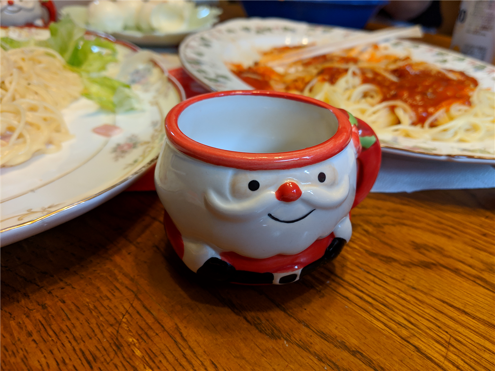
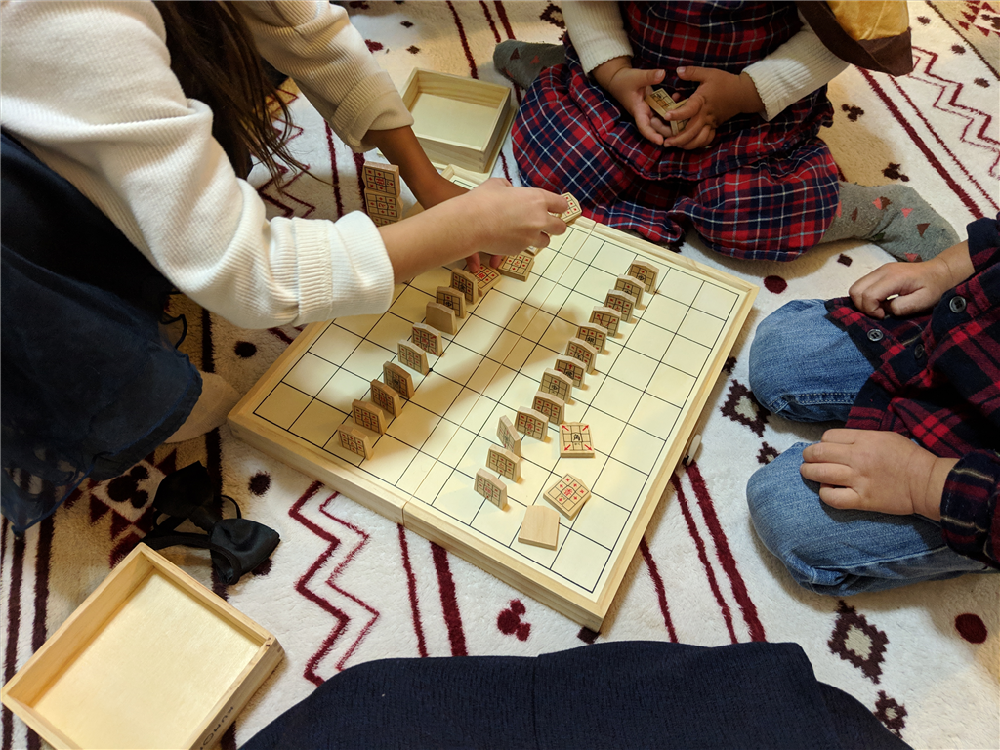

12月16日：甥っ子・姪っ子呼んでクリスマスパーティーした
執筆日時：

日曜日はちょっと早めのクリスマスパーティー（なぜなら、男どもが忘年会やらなんやらでクリスマス当日いないため）。甥っ子・姪っ子を呼んで、割と盛大にやった。
今年は不肖だるやなぎがサンタクロース役を拝命。ブーツ以外は完全コスプレ武装し、プレゼント袋を担いで煙突――はなかったので、庭からリビングへ侵入した。近所の人にちょっとみられたっぽいし、完全に怪しいおっさんだ。
ちょっと本格的にやりすぎたせいか、一番小さい子がぎゃん泣きしてしまったが、上2人はかなり喜んでくれてよかった。去年は弟2号が担当したのだけど、タバコを吸うわ、酒飲むわ、普通にしゃべるわでみんなにバレてかなり顰蹙を買ったらしいが、今年はかなりうまくいったのではないか。ただ、一番上の5歳の女の子には身元がちょっとバレかけたけど……頭のいい子だし、来年あたりが限界かもしれんな。
ちなみに、自分はクリスマスプレゼントとは別に（弟1号が買いすぎて、袋に入りきらなかったのであきらめた）、子ども用の将棋盤を買ってあげた。駒に移動できるマスが書かれた、一時期話題になったやつだ。

駒の動かし方を教えるところまではいかなかったけれど、まわり将棋（自分で開発した独自ルール！とドミノｗｗｗ）は気に入ったようで、何回もやろうとせがまれた。自分も亡くなった東京の爺ちゃんにこうやってまわり将棋、はさみ将棋、駒落ち将棋と教えてもらったなぁ……と懐かしく思い出した。
ちなみに、今回やった独自ルールは
- 自分の気に入った駒を将棋盤の四隅に置く（← 自分の気に入ったやつを覚えてね！ でも、「歩」はだめ）
- 「歩」を5枚ぐらいとり、手のひらで包んでシャカシャカと混ぜ、振り駒の要領で盤面に散らす
- 「と」が出た数だけ進む。横になったやつは「と」扱いだけど、2歩進む扱いとかにしてもいいかもね
- ちょうど隅を踏んだら、もう一回「振り駒」ができる
- 追いつかれたら負け！
次やるときは本式のでやってもいいかな？（参照：まわり将棋 - Wikipedia）
はさみ将棋はまだ飛車の動きと交代で指すこと、相手の駒を飛び越えちゃいけないことを飲み込ませるのがちょっと面倒で、今度の課題。
")
- 出版社/メーカー: くもん出版(KUMON PUBLISHING)
- 発売日: 2009/06/15
- メディア: おもちゃ＆ホビー
- 購入: 9人 クリック: 110回
- この商品を含むブログ (13件) を見る
この将棋盤はお片付けもしやすくて結構おすすめだと思う。ただ、将棋崩しをやるには駒がつるつるしすぎて、ちゃんと山にできなかったw